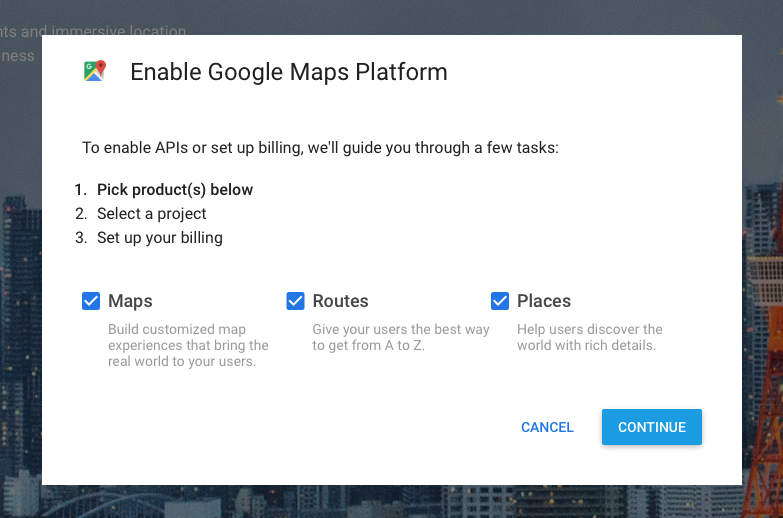
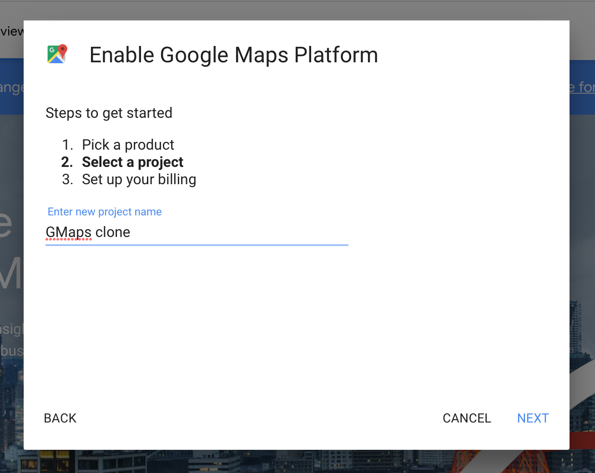
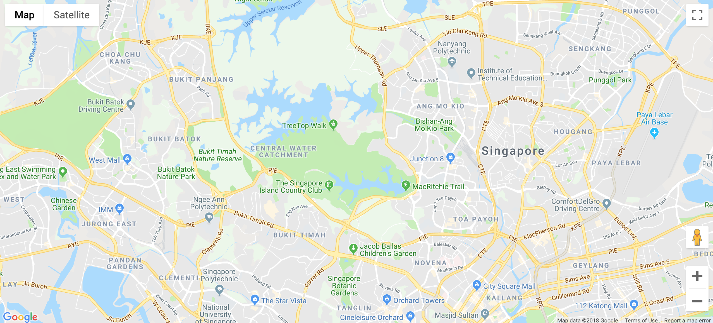

We’re going to build a Google Maps clone together! This clone does a very small subset of what Google Maps does. It only lets you search for driving directions between 2 places.
Let’s begin.
Set up your Google Account
Head over to Google Maps Platform and click on Get started. A modal window will pop up. Select all products (Maps, Routes, and Places).

Google will ask you to create a new project. You can name this anything you want. (Note: You can’t have “Google” in your project name).
I named mine Gmaps Clone.

Google will then ask you to set up a billing account. You need to create this account because Google has converted the Maps API into a paid product.
Don’t worry about money though! Google gives you a $200 credit to use the API every month. You won’t use more than this amount in this course. (Here’s Google’s new pricing sheet if you’re worried).
Follow the rest of the on-screen instructions. At the end of the process, you’ll get an API key.
Note: if you’ve read the API Guide, you would have seen async and defer attributes on the script tag. async and defer exist to change script-loading order. You don’t need them if you follow the format above.
Creating your first map
Google Map’s JavaScript API uses JSONP. You can tell because it accepts a callback value. In this case, we defined callback to be a function called initGoogleMap.
This means we need to create initGoogleMap before we call the API.
Note: Google Map’s API doesn’t accept an arrow function for the callback. Make sure you declare initGoogleMap with the function keyword.
function initGoogleMap() {
// Code for initializing the map here
}
To create a map, you can use google.maps.Map. It takes two values:
element: The DOM element to contain the map.
options: Options for the map. You can find a list of available options in Google Map’s reference. Two of these options are required: center and zoom.
function initGoogleMap () {
const mapDiv = document.querySelector('#map')
// Creating the Google Map
new google.maps.Map(mapDiv, {
center: { lat: 1.3521, lng: 103.8198 },
zoom: 13
})
}
center determines the center of the map. It is an object that contains the latitude and longitude values (lat and lng). They let you determine a location on the world map.
When you create your Google Map, I suggest you look up your hometown’s lat and lng values. It’ll be easier to comprehend the map this way. The lat and lng values above point to Singapore.
zoom determines how close-up the map should be. The smaller the value, the smaller the zoom. Here’s a rough estimate on the zoom levels:
1: World
5: Landmass/continent
10: City
15: Streets
20: Buildings
Once you create initGoogleMap map, refresh your page and you’ll see a map.

That’s it!
Note: Standard will complain about the google.maps.Map line. Don’t worry about it at this point. It’ll be fixed as we continue with the rest of the lessons.
Note 2: In case you were wondering, “why new”? The new part is a syntax for Object-Oriented Programming in JavaScript. We’ll get to Object-oriented Programming later in this course. For now, treat it like a normal function.